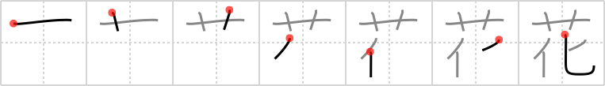

花
← →
flower

Reading:
On-Yomi: カ、ケ — Kun-Yomi: はな
Heisig story:
Flower . . . change.
Koohii stories:
1) [Copycatken] 24-6-2006(210): The flowers change with the seasons.
2) [CharleyGarrett] 15-6-2006(61): The flower is the essence of transience. So, the conceptual flower involves both the concept of flower plus change.
3) [meolox] 31-12-2007(46): "Hana" turned me down so I gave her a flower to change her mind.
4) [Peppi] 14-4-2009(26): When do you buy flowers? Right, when your girlfriend is mad at you. You hope that it changes everything, especially her mood. - I know, it's a bit naive… ;-).
5) [MeisterLlama] 23-1-2009(17): Man, flowers aren't really flowers unless they change. If you just have a flower that looks the same all the time, it's just one of those fake plastic ones. Real flowers change with the seasons.